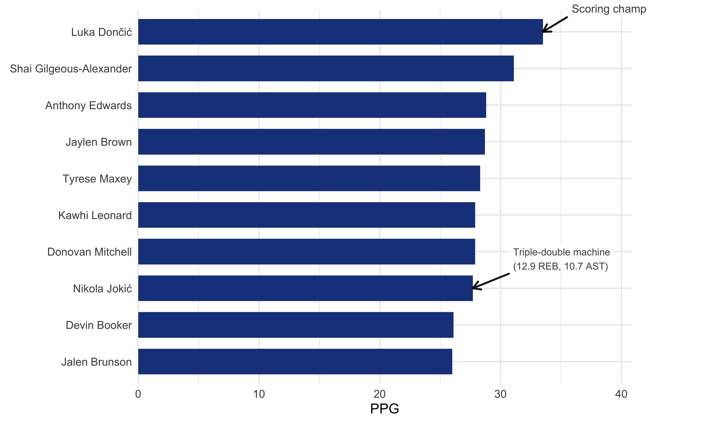
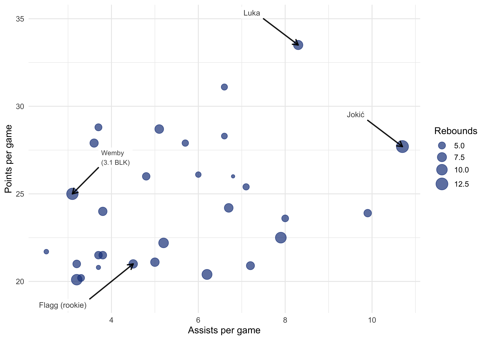

Registered S3 methods overwritten by 'ggpp':
method from
heightDetails.titleGrob ggplot2
widthDetails.titleGrob ggplot2

Figure 1: Points per game, 2025-26 regular season
Scoring vs Playmaking
Bubble scatter plot (size = rebounds) with four annotate_callout() labels picking out Luka, Jokić, rookie Cooper Flagg, and Wemby’s 3.1 blocks per game.
Code
small_arrow <- grid::arrow(length = grid::unit(0.12, "inches"))ggplot(nba, aes(x = AST, y = PTS)) +geom_point(aes(size = REB), alpha =0.7, color ="#1D428A") +annotate_callout( nba,where = PLAYER =="Nikola Jokić",label ="Jokić",position ="top-left",nudge =c(0.8, 1.5),arrow = small_arrow ) +annotate_callout( nba,where = PLAYER =="Luka Dončić",label ="Luka",position ="top-left",nudge =c(0.8, 1.5),arrow = small_arrow ) +annotate_callout( nba,where = PLAYER =="Cooper Flagg",label ="Flagg (rookie)",position ="bottom-left",nudge =c(1.0, 2.0),arrow = small_arrow ) +annotate_callout( nba,where = PLAYER =="Victor Wembanyama",label ="Wemby\n(3.1 BLK)",position ="top-right",nudge =c(0.6, 1.5),size =3.5,arrow = small_arrow ) +scale_size_continuous(range =c(2, 8), name ="Rebounds") +labs(x ="Assists per game", y ="Points per game") +theme_minimal(base_size =14)

Figure 2: Points vs assists per game — bubble size is rebounds
Field Goal Efficiency
annotate_change(format = "points") shows the 11.1 percentage-point gap between Zion Williamson (60.0%) and Jalen Johnson (48.9%).
Figure 3: Top 10 field goal percentage, 2025-26 regular season
Efficiency Rating
Lollipop (Cleveland dot) chart showing annotate_callout() works beyond bar charts. SGA is called out as 2025-26 MVP, while Luka’s callout uses colour = "#C8102E" to highlight the efficiency gap despite leading in scoring.
Figure 4: Efficiency rating, 2025-26 regular season
Three-Point Shooting
Bubble scatter of 3-point attempts vs accuracy, with three annotate_callout() labels highlighting the volume leader, the best volume-accuracy combo (Murray), and Flagg’s limited range in red.
Figure 5: 3-point attempts vs accuracy — bubble size is PPG
Top Playmakers
annotate_change(format = "absolute") shows the raw assist gap between Jokić and SGA, while annotate_callout() highlights Cade Cunningham’s breakout playmaking season.